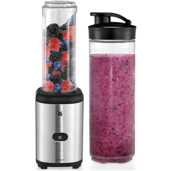

Welcome to Blenderiai
Mikseriai, blenderiai | imuperku.lt
2020.10.29 12:20+370 5 2080942 / info@imuperku.lt Pristatymas Apmokėjimas Garantijos ir grąžinimas Kontaktai DUK Krepšelis 0
Prekių nėra
Pirkti
Kiekis Viso Prekė sėkmingai pridėta į krepšelį Krepšelyje yra 0 elementų. Krepšelyje yra 1 elementas. Prekės viso: Pereiti prie apmokėjimo Tęsti apsipirkimą Mėgstamiausios Paskyra VISOS PREKĖS Buitis Namų apyvokos reikmenys Spintos, lentynos, maišai Vakuuminiai maišai Dėžutės, krepšiai Džiovyklės Šiukšliadėžės Skėčiai Šluotos Grindų plovimo šluotos Šluotos su kibirais Šluotos su gręžimo mechanizmu Šluotos siurbliai Šluostės Mikropluošto šluostės Grindų šluostės Šluostės langams valyti Dulkių šluostės Lyginimo lentos, priedai Patalynė Dekoratyvinės pagalvėlės, užvalkalai Pledai Antklodės Pagalvės Patalynės komplektai Čiužiniai Buitinė technika ir elektronika Prožektoriai, žibintai Lygintuvai, siurbliai Knygų skaityklės Muzikos grotuvai Oro drėkintuvai, drėgmės surinkėjai Smulkios prekės buičiai palengvinti Smulki elektronika, prietaisai Fototechnikos priedai Baterijos Laidai Maitinimo šaltiniai Ventiliatoriai Lemputės, šviestuvai Sieniniai šviestuvai Fluorescencinės lempos LED lempos Stalinės lempos Dūmų jutikliai Patalpų šildytuvai Židiniai Židinių priežiūrai Elektronikos valymo priemonės Oro filtruotojai Kamerų imitacijos Pašto dėžutės Kompiuterių priedai, kolonėlės Planšetinių kompiuterių priedai Dėklai, krepšiai Staliukai Žaidimų konsolės ir jų priedai Ausinės Bevielės ausinės Led lemputės Klaviatūros Kiti priedai Pelytės Pelės kilimėliai Virtualios realybės akiniai Kompiuterių adapteriai Karaokė mikrofonai Planšetiniai kompiuteriai Spausdintuvai Monitoriai, priedai GSM prekės, priedai Apsauginė plėvelė Dėklai Selfie lazdos Nešiojamos baterijos Mobilieji telefonai Nokia telefonai Acer telefonai CAT telefonai Samsung telefonai LG telefonai Telefonų dėklai iPhone 4 dėklai Belaidžiai pakrovėjai Apsauginiai stikliukai Pasiruošk mokyklai Įrankiai Gręžimo, sukimo įrankiai Šaltkalvio spaustuvai Įtampos keitikliai Įrankių rinkiniai Šlifavimo įrankiai Pjovimo įrankiai Suvirinimo įrankiai Darbo priedai Virtuvės įranga Sūrio gaminimui namuose Indai Kavai ir arbatai Puodeliai ir stiklinės Vaikiški indai Dvigubo stiklo indai Ketaus indai Tortų dekoravimo įrankiai Peiliai, galąstuvai, pjaustymo lentelės Indeliai maistui Indai prieskoniams Pietų dėžutės Duonos dėžutės Smulki technika Mikseriai, blenderiai Kavos aparatai, kavinukai Virduliai ir arbatiniai Keramikiniai virduliai Elektriniai virduliai Elektroninės svarstyklės Sulčiaspaudės Sumuštinių/vaflių keptuvės Elektriniai griliai Vaisių/daržovių džiovintuvai Virtuviniai kombainai Makaronų gaminimo mašinėlės Gruzdintuvės Spragėsių aparatai Vandens filtrai Pieno putų plakikliai Vakuumavimo aparatai Lengvesniam gaminimui Pjaustyklės Maisto smulkinimo mašinos Kepimo formos Puodai Daugiafunkciniai puodai Keptuvės Amberr keptuvės ir kepimo indai Elektrinės keptuvės Termosai, gertuvės Amberr rinkiniai sūriui Virtuvės aksesuarai Indų džiovyklės Staltiesės Virtuvės įrankiai Vandens šildytuvai Kilimai Vaikiški kilimai Shaggy tipo kilimai Shaggy apvalūs kilimai Įvairūs kilimėliai namams Durų kilimėliai Vonios kambario kilimėliai Toscana kolekcija BCF kolekcija BCF ovalūs kilimai Shaggy pliušiniai kilimai Brick 3D kolekcija Clover kolekcija Natural kolekcija Glamour kolekcija Kilimų išpardavimas Baldai Stalai Kavos staliukai Sofos, foteliai Kėdės Baro kėdės Taburetės Miegamojo baldai Lovos Valgomojo baldai Prieškambario baldai Kosmetiniai staliukai Pripučiami baldai Biuro kėdės Vangaloo biuro kėdės Minkšti pufai Pufai daiktadėžės Pripučiami pufai Megzti pufai Vaikiški pufai Pripučiami baldai INTEX Sandėliavimo lentynos Žaidimų kėdės Baldų komplektai Gyvūnų prekės Kačių draskyklės Narvai, maniežai Pavadėliai, petnešos, drabužiai Guoliai, nameliai Kailio priežiūra Transportavimo krepšiai Gyvūnų kirpimo mašinėlės Muzikos grotuvai GoPro priedai Prekybinės svarstyklės Dūmų jutikliai Biurui Biuro reikmenys Laminavimo aparatai Biuro stalai Skėčiai Įtampos keitikliai Vaikų prekės Žaidimai, žaislai Sklandytuvai Žaislinės mašinėlės Minkšti žaislai Lavinamieji žaidimai Spacerail trasos Stalo žaidimai, galvosūkiai Lėlių vežimėliai Vaikiški namų ruošos rinkiniai Medinės virtuvėlės Lėlės ir priedai Kūrybiniai rinkiniai Kinetinis smėlis Pakabukai ir kramtukai Konstruktoriai Lego konstruktoriai Vaikiški meistro įrankių rinkiniai Smėlio žaislai Dviračiai, paspirtukai, riedučiai Paspirtukai Paspirtukai vaikams Paspirtukai vaikams nuo 2 metų Paspirtukai vaikams nuo 5 metų Paspirtukai vaikams nuo 3 metų Paspirtukai 5 in 1 Triračiai paspirtukai vaikams Keturračiai paspirtukai vaikams Triračiai dviračiai Balansiniai dviračiai Šalmai ir kitos apsaugos Dviračiai Go - kart Traktoriai, sunkvežimiai Stumdukai Riedučiai, pačiūžos Riedlentės Baldai vaikams Minkštos kėdutės, foteliai Sofos Vaikiški baldakimai Maniežai, lovytės Vaikiškos dviračių kėdutės Automobilinės kėdutės Automobilinės kėdutės 15-36 kg Automobilinės kėdutės 9-36 kg Automobilinės kėdutės 9-18 kg Automobilinės kėdutės 9-25 kg Įvairūs aksesuarai Mokomieji, šokių, muzikiniai kilimėliai Futbolo stalai Elektromobiliai vaikams Vaikiški elektriniai motociklai Elektriniai keturračiai vaikams Vaikiški elektriniai visureigiai Su stūmimo funkcija Lipdukai automobiliams Elektromobiliai vaikams 24V Elektromobiliai vaikams 12V Vaikiški elektriniai automobiliai Elektriniai paspirtukai, riedžiai vaikams Riedžiai Muzikiniai instrumentai ir aksesuarai Pakabukai ir kramtukai Naktipuodžiai Nešyklės, gultukai Dronai Atsarginės dalys Dronai su kamera Minkšti kamuoliukų baseinai Vaikiški miegmaišiai Vaikiški patalynės komplektai Vaikiški kostiumai Kuprinės, krepšiai mamoms REKOMENDUOJAME 8 dalių medinė apsauginė tvorelė-maniežas 76,60 € 101,10 € Vaikiškas palapinių rinkinys su 200 kamuoliukų M2880 39,42 € 49,42 € Sodas Lauko baldai Lauko baldų komplektai Priedai Sofos ir minkšti kampai Ratano baldai Lauko stalai, staliukai Lauko valgomojo baldai Lauko baldų uždangalai Pinti lauko baldai Vaikiški lauko baldai Lauko kėdės Lauko gultai Lauko baldų išpardavimas Sulankstomi lauko baldai Aksesuarai Vazonai Lauko baseinai Baseinai vaikams Pripučiami baseinai Baseino priedai Apšvietimas Lauko prožektoriai Prožektoriai ant galvos Saulės energijos prožektoriai Lauko šviestuvai Įleidžiami lauko šviestuvai Lauko šviestuvai su saulės baterija LED lauko šviestuvai Dekoratyviniai lauko šviestuvai Lauko šviestuvai su judesio davikliu Lauko kėdės, gultai Priemonės nuo uodų Sodo technika Dažų purkštuvai Įrankių komplektai, rinkiniai Trimeriai Benzininiai trimeriai Karučiai ir sodo vežimėliai Gyvatvorių žirklės Kultivatoriai Elektrinės žoliapjovės-aeratoriai Medienos smulkintuvai Sėjimo aparatai Rankinės žoliapjovės, priedai Benzininės žoliapjovės Metalo detektoriai Sodo purkštuvai Uogų rinkimo aparatai Lauko kepsninės, griliai Kepsninės Kepsninės šašlykinės BBQ kepsninės Griliai Dujiniai griliai Priedai griliams Priemonės nuo kenkėjų Priemonės nuo uodų Kibirai Agroplevelės Laistymo žarnos Sūpynės Lauko sūpynės Sūpynės vaikams Pakabinamos sūpynės Sūpynės gandro lizdas Sodo sūpynės Sūpynės namuose Sūpynės hamakai Pakabinami krėslai Lauko sūpynes su stogeliu Hamakai Hamakai sūpynės Pakabinami Hamakai Lauko hamakai Priedai hamakams Tvoros ir jų priedai Namams, sodui ir daržui Kaminer produkcija Vandens siurbliai Karučiai ir sodo vežimėliai Kopėčios Sėjimo aparatai Šiltnamiai Šiltnamiai daigyklos Šiltnamių išpardavimas Lenkiški šiltnamiai Pavėsinės, palapinės Medžiaginės lauko pavėsinės Lauko skėčiai Lauko skėčiai nuo lietaus Lauko skėčiai nuo saulės Tentai nuo saulės Agroplevelės Laisvalaikiui Ormaišiai Auto Auto Aksesuarai ir priedai FM siųstuvai Saulės baterijos Asmens saugos priedai Telefonų laikikliai Vaizdo registratoriai Vaizdo registratoriai su gps Vaizdo registratoriai su dviem kamerom Alkotesteriai ir jų priedai Apklijavimo plėvelė Vaikiškos langų užuolaidėlės Šildytuvai, ventiliatoriai Automobilių keltuvai Auto magnetolos FM moduliatoriai Aukšto slėgio plovimo įranga ir priedai Navigacijos Garmin navigacijos Radarų detektoriai Kvapai, difuzoriai Automobilių diagnostika Rekomenduojami produktai Tentas automobiliui AG261 14,21 € 20,22 € Automobilio salono šildytuvas 10,37 € 16,75 € Kėbulo įlenkimų šalinimo rinkinys Pops a Dent 6,47 € 11,40 € Sporto prekės Sporto prekės Treniruokliai Bėgimo takeliai Dviračių treniruokliai Treniruočių suoliukai Pasipriešinimo gumos Svarmenys Hanteliai Giros sportui Masažiniai volai sportui Treniruokliai pilvo presui Kojų treniruokliai Treniruokliai namams Daugiafunkciniai treniruokliai Rankų treniruokliai Nugaros treniruokliai Vibruojantys treniruokliai Balansiniai treniruokliai Treniruokliai sėdmenims Paspirtukai, dviračiai suaugusiems Elektriniai paspirtukai Paspirtukai URBAN Elektriniai dviračiai Xiaomi šalmai Dviračių aksesuarai Vaikščiojimo lazdos Batutai Batutai vaikams Batutai su tinklu Lauko batutai Batutų dalys Vandeniui atsparūs maišai Pripučiami vandens žaislai Pripučiamos plaukimo rankovės Gimnastikos kilimėliai Šokdynės Lankai Aktyviam laisvalaikiui Futbolo vartai Gimnastikos kamuoliai Išmanieji laikrodžiai Veiksmo kameros išmaniosios apyrankės Rekomenduojami produktai Šiaurietiško ėjimo lazdos 13,15 € 17,69 € Prie dviračio tvirtinamas dvivietis vežimėlis - priekaba... 114,93 € 144,93 € Pripučiama sofa - lova Bestway 5in1 75054 65,26 € 84,26 € Grožis ir sveikata Grožis - sveikata Plaukų kirpimo mašinėlės Apranga Karnavaliniai kostiumai ir kaukės Kombinezonai Chalatai Kambarinės šlepetės Masažuokliai ir diržai Svarstyklės Graminės svarstyklės Manikiūro, pedikiūro prietaisai UV/LED lempos Frezos Dulkių surinkėjai Plaukų džiovintuvai, formavimo prietaisai Depiliacijos, skutimosi priemonės Korsetai, liemenėlės Prekės sveikatai gerinti Akupresūros prekės Inhaliatoriai Šildyklės Grožiui puoselėti Kvepalai Masažo stalai Kosmetikos lagaminėliai, papuošalų dėžutės Makiažo teptukai Veidrodžiai Dantų priežūra Elektriniai dantų šepetėliai Rekomenduojame Parafino vonelė su priedais 25,99 € 61,50 € Hibridinė 48W LED/UV lempa nagams SUN6S 40,56 € 50,56 € Akupresūros masažinis kilimėlis 17,58 € 39,66 € Kilimai Kilimai Vaikiški kilimai Shaggy tipo kilimai Shaggy apvalūs kilimai Įvairūs kilimėliai namams Durų kilimėliai Vonios kambario kilimėliai Toscana kolekcija BCF kolekcija BCF ovalūs kilimai Shaggy pliušiniai kilimai Brick 3D kolekcija Clover kolekcija Natural kolekcija Glamour kolekcija Kilimų išpardavimas Cosy Shaggy kolekcija Picasso kolekcija Luna Nairobi kolekcija Kilimai svetainei Guminiai kilimai Ilgo plauko kilimai Kilimai koridoriui 3d kilimai Minkšti kilimai Tualeto kilimeliai Kilimas Shaggy Beige 22,11 € 33,69 € Shaggy pliušinis kilimas Capuccino 62,00 € 77,00 € Kilimas Montor 59 13,00 € 18,00 € Batutai Įrankiai TOP prekės Naujos prekės Prekės su pažeidimais Sandėlio valymas Buitis Namų apyvokos reikmenys Spintos, lentynos, maišai Vakuuminiai maišai Dėžutės, krepšiai Džiovyklės Šiukšliadėžės Skėčiai Šluotos Grindų plovimo šluotos Šluotos su kibirais Šluotos su gręžimo mechanizmu Šluotos siurbliai Šluostės Mikropluošto šluostės Grindų šluostės Šluostės langams valyti Dulkių šluostės Lyginimo lentos, priedai Patalynė Dekoratyvinės pagalvėlės, užvalkalai Pledai Antklodės Pagalvės Patalynės komplektai Čiužiniai Kilimai Vaikiški kilimai Shaggy tipo kilimai Shaggy apvalūs kilimai Įvairūs kilimėliai namams Durų kilimėliai Vonios kambario kilimėliai Toscana kolekcija BCF kolekcija BCF ovalūs kilimai Shaggy pliušiniai kilimai Brick 3D kolekcija Clover kolekcija Natural kolekcija Glamour kolekcija Kilimų išpardavimas Virtuvės įranga Sūrio gaminimui namuose Indai Tortų dekoravimo įrankiai Peiliai, galąstuvai, pjaustymo lentelės Indeliai maistui Smulki technika Lengvesniam gaminimui Kepimo formos Puodai Keptuvės Termosai, gertuvės Amberr rinkiniai sūriui Virtuvės aksesuarai Virtuvės įrankiai Vandens šildytuvai Buitinė technika ir elektronika Prožektoriai, žibintai Lygintuvai, siurbliai Knygų skaityklės Muzikos grotuvai Oro drėkintuvai, drėgmės surinkėjai Smulkios prekės buičiai palengvinti Smulki elektronika, prietaisai Ventiliatoriai Lemputės, šviestuvai Dūmų jutikliai Patalpų šildytuvai Elektronikos valymo priemonės Oro filtruotojai Kamerų imitacijos Pašto dėžutės Kompiuterių priedai, kolonėlės Planšetinių kompiuterių priedai Dėklai, krepšiai Staliukai Žaidimų konsolės ir jų priedai Ausinės Bevielės ausinės Led lemputės Klaviatūros Kiti priedai Pelytės Pelės kilimėliai Virtualios realybės akiniai Kompiuterių adapteriai Karaokė mikrofonai Planšetiniai kompiuteriai Spausdintuvai Monitoriai, priedai Muzikos grotuvai GoPro priedai Prekybinės svarstyklės Dūmų jutikliai Kalėdos Girliandos Vidaus girliandos Lauko girliandos Kalėdinės dekoracijos, papuošimai Kalėdinės eglutės Lauko projektoriai, lazeriai Kalėdiniai vainikai Baldai Stalai Kavos staliukai Sofos, foteliai Kėdės Baro kėdės Taburetės Miegamojo baldai Lovos Valgomojo baldai Prieškambario baldai Kosmetiniai staliukai Pripučiami baldai Biuro kėdės Vangaloo biuro kėdės Minkšti pufai Pufai daiktadėžės Pripučiami pufai Megzti pufai Vaikiški pufai Pripučiami baldai INTEX Sandėliavimo lentynos Žaidimų kėdės Baldų komplektai Gyvūnų prekės Kačių draskyklės Narvai, maniežai Pavadėliai, petnešos, drabužiai Guoliai, nameliai Kailio priežiūra Transportavimo krepšiai Gyvūnų kirpimo mašinėlės Įrankiai Gręžimo, sukimo įrankiai Šaltkalvio spaustuvai Įtampos keitikliai Įrankių rinkiniai Šlifavimo įrankiai Pjovimo įrankiai Suvirinimo įrankiai Darbo priedai Vaikų prekės Žaislinės mašinėlės Minkšti žaislai Lėlės ir priedai Kinetinis smėlis Vaikiški meistro įrankių rinkiniai Lenktynių trasos Mediniai žaislai Muzikiniai žaislai Robotai žaislai Elektroniniai žaislai Tamagotchi žaidimai Šiaudelių konstruktoriai Dovanos mergaitėms Dovanos berniukams Palapinės Tipi palapinės Tipi palapinių rinkiniai Palapinės ir rinkiniai Maniežai, lovytės Vaikiškos dviračių kėdutės Automobilinės kėdutės Automobilinės kėdutės 15-36 kg Automobilinės kėdutės 9-36 kg Automobilinės kėdutės 9-18 kg Automobilinės kėdutės 9-25 kg Dronai Atsarginės dalys Dronai su kamera Lavinamieji žaidimai Stalo žaidimai, galvosūkiai Lėlių vežimėliai Vaikiški namų ruošos rinkiniai Medinės virtuvėlės Konstruktoriai Lego konstruktoriai Go - kart Dviračiai, paspirtukai, riedučiai Paspirtukai Paspirtukai vaikams Paspirtukai vaikams nuo 2 metų Paspirtukai vaikams nuo 5 metų Paspirtukai vaikams nuo 3 metų Paspirtukai 5 in 1 Triračiai paspirtukai vaikams Keturračiai paspirtukai vaikams Triračiai dviračiai Balansiniai dviračiai Šalmai ir kitos apsaugos Dviračiai Go - kart Traktoriai, sunkvežimiai Stumdukai Riedučiai, pačiūžos Riedlentės Maitinimo kėdutės Įvairūs aksesuarai Smulki elektronika Naktinės lemputės, projektoriai Mokomieji, šokių, muzikiniai kilimėliai Futbolo stalai Muzikiniai instrumentai ir aksesuarai Naktipuodžiai Elektromobiliai vaikams Vaikiški elektriniai motociklai Elektriniai keturračiai vaikams Vaikiški elektriniai visureigiai Su stūmimo funkcija Lipdukai automobiliams Elektromobiliai vaikams 24V Elektromobiliai vaikams 12V Vaikiški elektriniai automobiliai Elektriniai paspirtukai, riedžiai vaikams Riedžiai Nešyklės, gultukai Minkšti kamuoliukų baseinai Vaikiški kostiumai Baldai vaikams Minkštos kėdutės, foteliai Sofos Vaikiški baldakimai Čiuožyklos Vaikštynės Apsauginės tvorelės, varteliai Auto Auto Aksesuarai ir priedai FM siųstuvai Saulės baterijos Asmens saugos priedai Telefonų laikikliai Vaizdo registratoriai Vaizdo registratoriai su gps Vaizdo registratoriai su dviem kamerom Alkotesteriai ir jų priedai Apklijavimo plėvelė Vaikiškos langų užuolaidėlės Šildytuvai, ventiliatoriai Automobilių keltuvai Auto magnetolos FM moduliatoriai Aukšto slėgio plovimo įranga ir priedai Navigacijos Garmin navigacijos Radarų detektoriai Kvapai, difuzoriai Automobilių diagnostika Automobiliniai telefonų įkrovikliai Akumuliatoriu krovikliai Automobilių poliruokliai Kelioniniai šaldytuvai Rekomenduojami produktai Led žibintai automobiliui 9,97 € 19,53 € Automobilio salono šildytuvas 10,37 € 16,75 € Sodas Lauko kepsninės, griliai Kepsninės Kepsninės šašlykinės BBQ kepsninės Griliai Dujiniai griliai Priedai griliams Lauko baldai Lauko baldų komplektai Priedai Sofos ir minkšti kampai Ratano baldai Lauko stalai, staliukai Lauko valgomojo baldai Lauko baldų uždangalai Pinti lauko baldai Vaikiški lauko baldai Lauko kėdės Lauko gultai Lauko baldų išpardavimas Sulankstomi lauko baldai Lauko baseinai Baseinai vaikams Pripučiami baseinai Baseino priedai Apšvietimas Lauko prožektoriai Prožektoriai ant galvos Saulės energijos prožektoriai Lauko šviestuvai Įleidžiami lauko šviestuvai Lauko šviestuvai su saulės baterija LED lauko šviestuvai Dekoratyviniai lauko šviestuvai Lauko šviestuvai su judesio davikliu Lauko kėdės, gultai Priemonės nuo uodų Sodo technika Dažų purkštuvai Įrankių komplektai, rinkiniai Trimeriai Benzininiai trimeriai Karučiai ir sodo vežimėliai Gyvatvorių žirklės Kultivatoriai Elektrinės žoliapjovės-aeratoriai Medienos smulkintuvai Sėjimo aparatai Rankinės žoliapjovės, priedai Benzininės žoliapjovės Metalo detektoriai Sodo purkštuvai Uogų rinkimo aparatai Priemonės nuo kenkėjų Priemonės nuo uodų Pavėsinės, palapinės Medžiaginės lauko pavėsinės Lauko skėčiai Lauko skėčiai nuo lietaus Lauko skėčiai nuo saulės Tentai nuo saulės Agroplevelės Laisvalaikiui Ormaišiai Laistymo žarnos Hamakai Hamakai sūpynės Pakabinami Hamakai Lauko hamakai Priedai hamakams Tvoros ir jų priedai Karučiai ir sodo vežimėliai Kibirai Kopėčios Sėjimo aparatai Šiltnamiai Šiltnamiai daigyklos Šiltnamių išpardavimas Lenkiški šiltnamiai Sūpynės Lauko sūpynės Sūpynės vaikams Pakabinamos sūpynės Sūpynės gandro lizdas Sodo sūpynės Sūpynės namuose Sūpynės hamakai Pakabinami krėslai Lauko sūpynes su stogeliu Kaminer produkcija Sporto prekės Sporto prekės Treniruokliai Bėgimo takeliai Dviračių treniruokliai Treniruočių suoliukai Pasipriešinimo gumos Svarmenys Hanteliai Giros sportui Masažiniai volai sportui Treniruokliai pilvo presui Kojų treniruokliai Treniruokliai namams Daugiafunkciniai treniruokliai Rankų treniruokliai Nugaros treniruokliai Vibruojantys treniruokliai Balansiniai treniruokliai Treniruokliai sėdmenims Treniruokliai krūtinei Skersiniai prisitraukimams Kardio treniruokliai Jėgos treniruokliai Nugaros treniruokliai Paspirtukai, dviračiai suaugusiems Elektriniai paspirtukai Paspirtukai URBAN Elektriniai dviračiai Xiaomi šalmai Dviračių aksesuarai Vaikščiojimo lazdos Batutai Batutai vaikams Batutai su tinklu Lauko batutai Batutų dalys Vandeniui atsparūs maišai Pripučiami vandens žaislai Pripučiamos plaukimo rankovės Gimnastikos kilimėliai Šokdynės Lankai Aktyviam laisvalaikiui Futbolo vartai Gimnastikos kamuoliai Išmanieji laikrodžiai Veiksmo kameros išmaniosios apyrankės Nardymo reikmenys Turizmas Rekomenduojami produktai Šiaurietiško ėjimo lazdos 13,15 € 17,69 € Relax Spin & Tone vibro masažuoklis f11 11,99 € 14,99 € Grožis - sveikata Parafino vonelė su priedais 25,99 € 61,50 € Plaukų kirpimo mašinėlės Masažuokliai ir diržai Svarstyklės Graminės svarstyklės Masažo stalai Manikiūro, pedikiūro prietaisai UV/LED lempos Frezos Dulkių surinkėjai Plaukų džiovintuvai, formavimo prietaisai Depiliacijos, skutimosi priemonės Korsetai, liemenėlės Prekės sveikatai gerinti Akupresūros prekės Inhaliatoriai Šildyklės Grožiui puoselėti Kvepalai Kosmetikos lagaminėliai, papuošalų dėžutės Makiažo teptukai Dovanų idėjos Dovanų idėjos Dovanos draugams Puodeliai Šmaikščios, juokingos, linksmos dovanos Linksmam vakarėliui Dovanos vyrams Namų šeimininkėms pravers Dovanos moterims Valentino dienos dovanos Valentino dienos dovanos jam Valentino dienos dovana jai Dovanos kolegoms Dovanos suaugusiems Originalios dovanų idėjos Šiltos prekės Kaukės Dovanų idėjos draugei Dovanų idėjos draugui Kalėdinės dovanos Dovanų idėjos mamai Dovanų idėjos vaikams Dovanų idėjos tėčiui Dovanų idėjos krikštynoms Dovanų idėjos vestuvėms Dovanų idėjos tevams Dovanų idėjos paaugliams Dovanų idėjos mokytojai Dovanų idėjos porai Nutrinamas pasaulio žemėlapis 13,28 € 16,60 € Cukraus vatos gaminimo aparatas Q13 29,74 € 41,98 € Naujienos Menu + Sporto prekės + Treniruokliai Bėgimo takeliai Dviračių treniruokliai Treniruočių suoliukai Pasipriešinimo gumos Svarmenys Masažiniai volai sportui Treniruokliai pilvo presui Kojų treniruokliai Treniruokliai namams Daugiafunkciniai treniruokliai Rankų treniruokliai Nugaros treniruokliai Vibruojantys treniruokliai Balansiniai treniruokliai Treniruokliai sėdmenims Treniruokliai krūtinei Skersiniai prisitraukimams Kardio treniruokliai Jėgos treniruokliai Nugaros treniruokliai + Paspirtukai, dviračiai suaugusiems Elektriniai paspirtukai Paspirtukai URBAN Elektriniai dviračiai Xiaomi šalmai Dviračių aksesuarai Vaikščiojimo lazdos + Batutai Batutai vaikams Batutai su tinklu Lauko batutai Batutų dalys Vandeniui atsparūs maišai + Pripučiami vandens žaislai Pripučiamos plaukimo rankovės Gimnastikos kilimėliai Šokdynės Lankai + Aktyviam laisvalaikiui Futbolo vartai Gimnastikos kamuoliai Išmanieji laikrodžiai Veiksmo kameros išmaniosios apyrankės Nardymo reikmenys Turizmas + Vaikų prekės Maniežai, lovytės Vaikiškos dviračių kėdutės + Automobilinės kėdutės Automobilinės kėdutės 15-36 kg Automobilinės kėdutės 9-36 kg Automobilinės kėdutės 9-18 kg Automobilinės kėdutės 9-25 kg + Dronai Atsarginės dalys Dronai su kamera + Žaidimai, žaislai Sklandytuvai Žaislinės mašinėlės Minkšti žaislai Lavinamieji žaidimai Spacerail trasos Stalo žaidimai, galvosūkiai Lėlių vežimėliai Vaikiški namų ruošos rinkiniai Lėlės ir priedai Kūrybiniai rinkiniai Kinetinis smėlis Pakabukai ir kramtukai Konstruktoriai Vaikiški meistro įrankių rinkiniai Smėlio žaislai Vonios žaislai Muilo burbulai Žaisliniai telefonai Lenktynių trasos Žaislai mergaitėms Žaislai berniukams Mediniai žaislai Lauko žaislai Muzikiniai žaislai Kaladėles Robotai žaislai Elektroniniai žaislai Pripučiami žaislai vaikams Žaislai vaikams nuo 10 metų Žaislai vaikams nuo 8 metų Žaislai vaikams nuo 7 metų Žaislai vaikams nuo 6 metų Žaislai vaikams nuo 5 metų Žaislai vaikams nuo 3 metų Žaislai vaikams nuo 2 metų Žaislai vaikams nuo 1 metų Šiaudelių konstruktoriai Žaisliniai ginklai Dovanos mergaitėms Dovanos berniukams Garažai Lėlių namai Interaktyvūs žaislai Supami žaislai Medinės kaladėlės Žaislai kūdikiams Kamuoliukų rinkiniai Lavinimo staliukai Laivai + Dviračiai, paspirtukai, riedučiai Paspirtukai Triračiai dviračiai Balansiniai dviračiai Šalmai ir kitos apsaugos Dviračiai Go - kart Traktoriai, sunkvežimiai Stumdukai Riedučiai, pačiūžos Riedlentės Maitinimo kėdutės Įvairūs aksesuarai + Smulki elektronika Naktinės lemputės, projektoriai Mokomieji, šokių, muzikiniai kilimėliai Futbolo stalai + Palapinės Tipi palapinės Tipi palapinių rinkiniai Palapinės ir rinkiniai + Elektromobiliai vaikams Vaikiški elektriniai motociklai Elektriniai keturračiai vaikams Vaikiški elektriniai visureigiai Su stūmimo funkcija Lipdukai automobiliams Elektromobiliai vaikams 24V Elektromobiliai vaikams 12V Vaikiški elektriniai automobiliai Elektriniai paspirtukai, riedžiai vaikams Muzikiniai instrumentai ir aksesuarai Naktipuodžiai Nešyklės, gultukai Minkšti kamuoliukų baseinai Vaikiški miegmaišiai Vaikiški kostiumai Kuprinės, krepšiai mamoms + Baldai vaikams Minkštos kėdutės, foteliai Sofos Vaikiški baldakimai Čiuožyklos Vaikštynės Apsauginės tvorelės, varteliai Rogutės, čiuožynės Vaikų maitinimas Vaikiški vežimėliai Vystyklai Vandens žaidimų kilimėliai + Kalėdos + Girliandos Vidaus girliandos Lauko girliandos Kalėdinės dekoracijos, papuošimai Kalėdinės eglutės Lauko projektoriai, lazeriai Kalėdiniai vainikai + Sodas + Lauko baseinai Baseinai vaikams Pripučiami baseinai Baseino priedai + Apšvietimas Lauko prožektoriai Lauko šviestuvai Lauko kėdės, gultai + Sodo technika Dažų purkštuvai Įrankių komplektai, rinkiniai Trimeriai Benzininiai trimeriai Karučiai ir sodo vežimėliai Gyvatvorių žirklės Kultivatoriai Elektrinės žoliapjovės-aeratoriai Medienos smulkintuvai Sėjimo aparatai Rankinės žoliapjovės, priedai Benzininės žoliapjovės Metalo detektoriai Sodo purkštuvai Uogų rinkimo aparatai Pjūklai Sniego pūstuvai Oro pūtimo įranga Elektros generatoriai Šlavimo įranga + Lauko kepsninės, griliai Kepsninės Kepsninės šašlykinės BBQ kepsninės Griliai Dujiniai griliai Priedai griliams + Lauko baldai Lauko baldų komplektai Priedai Sofos ir minkšti kampai Ratano baldai Lauko stalai, staliukai Lauko valgomojo baldai Lauko baldų uždangalai Pinti lauko baldai Vaikiški lauko baldai Lauko kėdės Lauko gultai Lauko baldų išpardavimas Sulankstomi lauko baldai + Priemonės nuo kenkėjų Priemonės nuo uodų Kibirai Kopėčios + Šiltnamiai Šiltnamiai daigyklos Šiltnamių išpardavimas Lenkiški šiltnamiai + Pavėsinės, palapinės Medžiaginės lauko pavėsinės + Lauko skėčiai Lauko skėčiai nuo lietaus Lauko skėčiai nuo saulės Tentai nuo saulės Agroplevelės + Laisvalaikiui Ormaišiai Laistymo žarnos + Sūpynės Lauko sūpynės Sūpynės vaikams Pakabinamos sūpynės Sūpynės gandro lizdas Sodo sūpynės Sūpynės namuose Sūpynės hamakai Pakabinami krėslai Lauko sūpynes su stogeliu + Hamakai Hamakai sūpynės Pakabinami Hamakai Lauko hamakai Priedai hamakams Tvoros ir jų priedai Namams, sodui ir daržui Kaminer produkcija + Aksesuarai Vazonai Vandens siurbliai Sodo nameliai Lauko šildytuvai Džiovyklės drabužiams + Buitis + Namų apyvokos reikmenys Spintos, lentynos, maišai Dėžutės, krepšiai Džiovyklės Šiukšliadėžės Skėčiai Šluotos Šluostės Lyginimo lentos, priedai + Biurui Biuro reikmenys Laminavimo aparatai Biuro stalai + Patalynė Dekoratyvinės pagalvėlės, užvalkalai Pledai Antklodės Pagalvės Patalynės komplektai Čiužiniai + Virtuvės įranga Sūrio gaminimui namuose Indai Tortų dekoravimo įrankiai Peiliai, galąstuvai, pjaustymo lentelės Indeliai maistui Smulki technika Lengvesniam gaminimui Kepimo formos Puodai Keptuvės Termosai, gertuvės Amberr rinkiniai sūriui Virtuvės aksesuarai Virtuvės įrankiai Vandens šildytuvai Vakuuminiam pakavimui + Buitinė technika ir elektronika Prožektoriai, žibintai Lygintuvai, siurbliai Knygų skaityklės Muzikos grotuvai Oro drėkintuvai, drėgmės surinkėjai Smulkios prekės buičiai palengvinti Smulki elektronika, prietaisai Ventiliatoriai Lemputės, šviestuvai Dūmų jutikliai Patalpų šildytuvai Elektronikos valymo priemonės Oro filtruotojai Kamerų imitacijos Pašto dėžutės Namų apsauga Stebėjimo kameros Fotoaparatai, videokameros Dulkių siurbliai Buitinė technika Radijo imtuvai ir žadintuvai Namų kino sistemos Lemputės Pinigų tikrinimo aparatai Durų skambučiai Drėgmės matuokliai/termometrai Mobilieji Telefonai Siuvimo mašinos Ryšio technika DVD grotuvai Televizoriai Rūbų garintuvai Prailgintuvai Išmaniųjų namų įranga + Kompiuterių priedai, kolonėlės Planšetinių kompiuterių priedai Dėklai, krepšiai Staliukai Žaidimų konsolės ir jų priedai Ausinės Led lemputės Klaviatūros Kiti priedai Pelytės Virtualios realybės akiniai Kompiuterių adapteriai Karaokė mikrofonai Planšetiniai kompiuteriai Spausdintuvai Monitoriai, priedai Mikrofonai Projektoriai Nešiojami kompiuteriai Skaneriai Žaidimų konsolės, priedai Maršrutizatoriai Esporto ir žaidimų įranga Kompiuterio staliukai Audio technika Kuprinės + Kilimai Vaikiški kilimai Shaggy tipo kilimai Shaggy apvalūs kilimai Įvairūs kilimėliai namams Durų kilimėliai Vonios kambario kilimėliai Toscana kolekcija BCF kolekcija BCF ovalūs kilimai Shaggy pliušiniai kilimai Brick 3D kolekcija Clover kolekcija Natural kolekcija Glamour kolekcija Kilimų išpardavimas Cosy Shaggy kolekcija Picasso kolekcija Luna Nairobi kolekcija Kilimai svetainei Guminiai kilimai Ilgo plauko kilimai Kilimai koridoriui 3d kilimai Minkšti kilimai Tualeto kilimeliai Miegamojo kilimai Prieškambario kilimai Apvalūs kilimai BCF Beige kolekcija Rabbit kolekcija Kolekcija Ombre + Kalėdos Girliandos Kalėdinės dekoracijos, papuošimai Kalėdinės eglutės Lauko projektoriai, lazeriai Kalėdiniai vainikai + Baldai Stalai Kavos staliukai Sofos, foteliai Kėdės Miegamojo baldai Valgomojo baldai Prieškambario baldai Kosmetiniai staliukai Pripučiami baldai Biuro kėdės Minkšti pufai Pripučiami baldai INTEX Sandėliavimo lentynos Žaidimų kėdės Baldų komplektai Baldų aksesuarai, priedai Lagaminai + Gyvūnų prekės Kačių draskyklės Narvai, maniežai Pavadėliai, petnešos, drabužiai Guoliai, nameliai Kailio priežiūra Transportavimo krepšiai Gyvūnų kirpimo mašinėlės + Įrankiai Gręžimo, sukimo įrankiai Šaltkalvio spaustuvai Įtampos keitikliai Įrankių rinkiniai Šlifavimo įrankiai Pjovimo įrankiai Suvirinimo įrankiai Darbo priedai + GSM prekės, priedai Apsauginė plėvelė Dėklai Selfie lazdos Nešiojamos baterijos Mobilieji telefonai Telefonų dėklai Belaidžiai pakrovėjai Apsauginiai stikliukai Kanceliarinės prekės Televizoriaus priedai GoPro priedai Užuolaidos Prekybinės svarstyklės + Vonios kambariui Rankšluoščiai Seifai Pasiruošk mokyklai + Laikrodžiai Laikrodžiai vyrams Laikrodžiai poroms Sieniniai laikrodžiai Laikrodžiai moterims Laikrodžiai vaikams Led laikrodžiai Rankiniai laikrodžiai Laikrodžiai žadintuvai Peleninės + Santechnika Kriauklės Vandens maišytuvai + Dekoracijos namams Šventinės dekoracijos, atributika LED dekoracijos namams Sienų lipdukai Gėlių vazos ir vazonai Namų kvapai ir žvakės + Grožis - sveikata Plaukų kirpimo mašinėlės + Apranga Karnavaliniai kostiumai ir kaukės Kombinezonai Chalatai Kambarinės šlepetės Masažuokliai ir diržai + Svarstyklės Graminės svarstyklės + Manikiūro, pedikiūro prietaisai UV/LED lempos Frezos Dulkių surinkėjai Plaukų džiovintuvai, formavimo prietaisai Depiliacijos, skutimosi priemonės Korsetai, liemenėlės + Prekės sveikatai gerinti Akupresūros prekės Inhaliatoriai Šildyklės + Grožiui puoselėti Kvepalai Masažo stalai Kosmetikos lagaminėliai, papuošalų dėžutės Makiažo teptukai Veidrodžiai + Dantų priežūra Elektriniai dantų šepetėliai Kraujospūdžio matuokliai Masažo stalų priedai Makiažo lempos Šildančios antklodės, diržai Barzdaskutės Apsaugos priemonės Termometrai Rankinės ir piniginės + Higienos priemonės Dušo želė Papuošalai + Auto + Aksesuarai ir priedai FM siųstuvai Saulės baterijos Asmens saugos priedai Telefonų laikikliai + Vaizdo registratoriai Vaizdo registratoriai su gps Vaizdo registratoriai su dviem kamerom Alkotesteriai ir jų priedai Apklijavimo plėvelė Vaikiškos langų užuolaidėlės Šildytuvai, ventiliatoriai Automobilių keltuvai Auto magnetolos FM moduliatoriai Aukšto slėgio plovimo įranga ir priedai + Navigacijos Garmin navigacijos Radarų detektoriai Kvapai, difuzoriai Automobilių diagnostika Automobiliniai telefonų įkrovikliai Akumuliatoriu krovikliai Automobilių poliruokliai Kelioniniai šaldytuvai + Dovanų idėjos Dovanos draugams Puodeliai Šmaikščios, juokingos, linksmos dovanos Linksmam vakarėliui Dovanos vyrams Namų šeimininkėms pravers Dovanos moterims + Valentino dienos dovanos Valentino dienos dovanos jam Valentino dienos dovana jai Dovanos kolegoms Dovanos suaugusiems Originalios dovanų idėjos Šiltos prekės Kaukės Dovanų idėjos draugei Dovanų idėjos draugui Kalėdinės dovanos Dovanų idėjos mamai Dovanų idėjos vaikams Dovanų idėjos tėčiui Dovanų idėjos krikštynoms Dovanų idėjos vestuvėms Dovanų idėjos tevams Dovanų idėjos paaugliams Dovanų idėjos mokytojai Dovanų idėjos porai Dovanos 18 gimtadienio proga Dovanos 30 gimtadienio proga 1 metukų gimtadienio dovanos Dovanos 25 gimtadienio proga Dovanų idėjos merginoms Dovanos gimtadienio proga sesei Gimtadienio dovanos mergaitei Dideli pliušiniai meškinai Nuotraukų rėmeliai, albumai Boso diena Sandėlio valymas Kontaktai Prekių pristatymas Atsiskaitymas už prekes Naršydami Imuperku.lt svetainėje Jūs sutinkate su slapukų naudojimo taisyklėmis. Sužinoti daugiau. X Sutinku Pagrindinis Buitis Virtuvės įranga Smulki technika Mikseriai, blenderiai Filtruoti pagal Išvalyti Naujienos Žaislai konstruktoriai – kūrybos priemonė vaikams Minkštas kamuoliukų baseinas Efektyvus šildymo būdas šaltuoju metų laiku Atsikratykite įkyriais rudens kenkėjaisSkaityti visas naujienas Apie Imuperku.lt 5 METAI Imuperku.lt parduotuvė su Jumis jau penki metai! 500 m 2 Didelis, modernus prekių sandėlys! Atsiimkite prekes iš karto po užsakymo. 11 085 Mes turime 11 085 prekes savo sandėlyje. MES... Kiekvieną dieną stengiames ir džiaugiames galėdami Jums padėti!
Mikseriai, blenderiai
Mikseriai, blenderiaiMikseris MR502
12,52 € 16,70 € -25% Per: Sandėlyje (1-2 d.d.) d.d. Pristatymas per: Sandėlyje (1-2 d.d.) d.d. Į krepšelį Mikseriai, blenderiaiPrime3 SSM41OR
26,40 € 33,00 € -20% Per: 1-2 d.d. Pristatymas per: 1-2 d.d. Į krepšelį Mikseriai, blenderiaiELITE trintuvas - blenderis
43,19 € 66,29 € -35% Per: 10 d.d. Pristatymas per: 10 d.d. Į krepšelį Mikseriai, blenderiaiPlakiklis MR500
12,73 € 15,72 € -19% Per: 10 d.d. Pristatymas per: 10 d.d. Į krepšelį Mikseriai, blenderiaiPlakiklis MR503
14,97 € 17,97 € -17% Per: 10 d.d. Pristatymas per: 10 d.d. Į krepšelį Mikseriai, blenderiaiPlakiklis MR054
14,97 € 17,97 € -17% Per: 10 d.d. Pristatymas per: 10 d.d. Į krepšelį Mikseriai, blenderiaiPlakiklis MR505
16,09 € 19,09 € -16% Per: 10 d.d. Pristatymas per: 10 d.d. Į krepšelį Mikseriai, blenderiaiVirtuvinis kombainas MR560
1 Atsiliepimas(-ai) 78,26 € 84,26 € -7% Per: 10 d.d. Pristatymas per: 10 d.d. Į krepšelį Mikseriai, blenderiaiDaugiafunkcinis trintuvas MR561
26,08 € 28,08 € -7% Per: 10 d.d. Pristatymas per: 10 d.d. Į krepšelį Mikseriai, blenderiaiDaugiafunkcinis trintuvas MR562
1 Atsiliepimas(-ai) 20,96 € 22,46 € -7% Per: 10 d.d. Pristatymas per: 10 d.d. Į krepšelį Mikseriai, blenderiaiDaugiafunkcinis blenderis MR564
23,09 € 28,09 € -18% Per: 10 d.d. Pristatymas per: 10 d.d. Į krepšelį Mikseriai, blenderiaiModernus blenderis MR565
27,58 € 32,58 € -15% Per: 10 d.d. Pristatymas per: 10 d.d. Į krepšelį Mikseriai, blenderiaiVirtuvinis kombainas Beper 90.330H
15,69 € 18,19 € -14% Per: 7 d.d. Pristatymas per: 7 d.d. Į krepšelį Mikseriai, blenderiaiSeverin SM 3737
57,04 € 71,29 € -20% Per: 7 d.d. Pristatymas per: 7 d.d. Į krepšelį Mikseriai, blenderiaiKENWOOD CCC200WH
278,60 € 348,25 € -20% Per: 7 d.d. Pristatymas per: 7 d.d. Į krepšelį Mikseriai, blenderiaiJata BT1034 inox
101,28 € 126,60 € -20% Per: 7 d.d. Pristatymas per: 7 d.d. Į krepšelį Rodoma 1 - 16 iš 240 dalykų Ankstesnis 1 2 3 ... 15 TęstiNaujienlaiškis
Register your email for latest news
Mano paskyra
Mano užsakymai Mano suteiktos nuolaidos Mano adresai Mano asmeninė informacija Mano kuponaiKlientų aptarnavimas
Susisiekite su mumis Svetainės žemėlapisInformacija
Kontaktai Prekių pristatymas Pirkimo sąlygos Tapkite mūsų partneriu Atsiskaitymas už prekes DUKKontaktai
UAB Ugninta I-V: 9:00 - 18:00 val. (13 - 14 val. pietų pertrauka) VI-VII: nedirbame. Savanorių pr.1, Vilnius Susisiekite dabar: +370 5 2080942 El. paštas: info@imuperku.lt
Kiekis: vnt.
Viso:
Jūsų krepšelyje laukiančios prekės.
Viso prekės:
